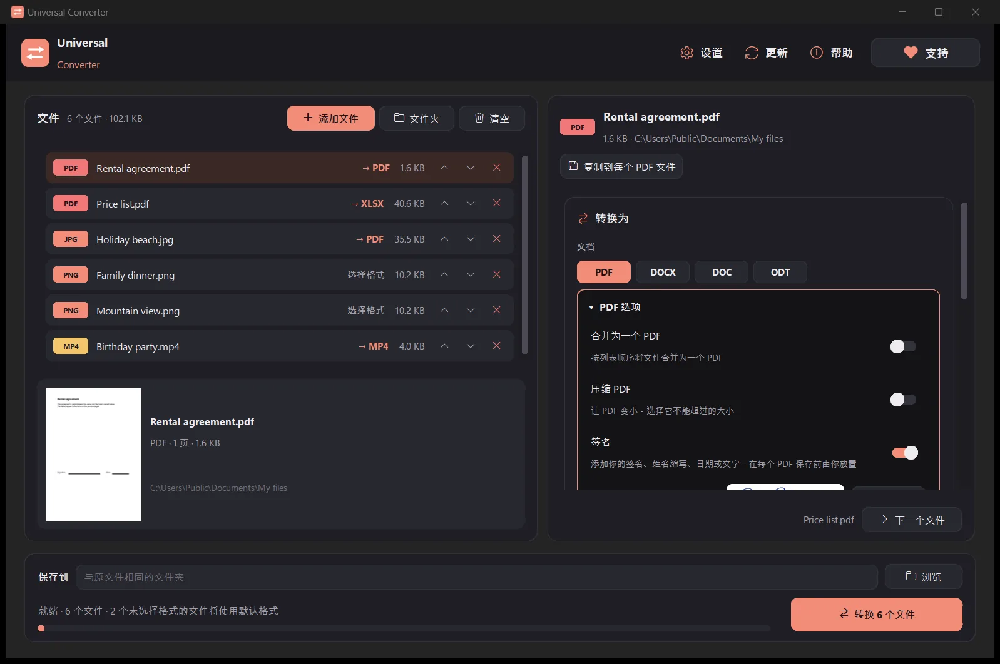

签署 PDF
只需创建一次签名：输入姓名并选择样式、用鼠标或手指手写，或使用纸上签名的照片。每个 PDF 打开时都会标出 Universal Converter 找到的签名线和空白签名栏：点击它们，或点击页面上的任意位置。它会保存一份已签名的副本，原文件保持不变。这是可见的电子签名，而不是基于证书的数字签名。
免费 · Windows 10 和 11，64 位 · ✓ 未发现病毒（VirusTotal）Windows 阻止了下载或应用？请改从 Microsoft Store 获取：同样免费，且受 Windows 信任。
下载 Mac 版 Apple 芯片，macOS 12 或更高 · ✓ 未发现病毒（VirusTotal）
如何安装和更新
- 打开下载的 .dmg，将 Universal Converter 拖到“应用程序”。
- 打开应用。首次打开时，macOS 会因为它未经 Apple 签名而阻止：点按“完成”。
- 打开“系统设置”>“隐私与安全性”，向下滚动，点按“仍要打开”并输入密码。只需操作一次。
更新：如果您在首次打开时允许，应用每次启动都会检查新版本，验证其数字签名，并在您选择时安装。
下载 Android 版 Android 10 或更高 · ✓ 未发现病毒（VirusTotal）
如何安装和更新
- 在手机上点按“下载 Android 版”。
- 打开下载的文件。如果 Android 提示，请允许浏览器或文件管理器安装应用。
- 点按“安装”。
更新：每次打开应用时，它会检查是否有新版本，并在新版本可用时通知您。用同样的方式下载并覆盖安装旧版本，您的设置会保留。
下载 Linux 版 64 位 (x86_64)：Ubuntu 22.04、Debian 12、Fedora 36 或更高版本 · ✓ 未发现病毒（VirusTotal）
如何安装和更新
- 下载 .AppImage 文件。
- 让它可以运行：右键点击，打开“属性 > 权限”，允许作为程序执行（或在终端中运行：chmod +x Universal-Converter-*.AppImage）。
- 双击它即可。无需安装：整个应用就是这一个文件。
更新：如果您在第一次打开时允许，应用每次启动都会检查新版本，验证其数字签名，并在原位置替换 AppImage 文件。
操作步骤
- 打开 Universal Converter。
- 把文件或整个文件夹拖入窗口，或点击“添加文件”。
- 选择 PDF 作为格式，打开“签名”，然后点击“您的签名”旁的“更改”创建签名。点击“转换”：每个 PDF 打开时都会标出签名线，点击它们，或选择“签名”“姓名缩写”“日期”或“文字”并点击放置位置。
- 点击“完成”。每个文件都另存为“名称_signed.pdf”，保存在原文件旁或您选择的文件夹中。

为什么离线处理？
Universal Converter 在您自己的设备上完成工作。文件保持私密，大文件也没问题，而且不联网也能用。
更多功能
- 把 PDF 转换为 Word
- 将 Word 文档转换为 PDF
- 把多个文件合并成一个 PDF
- 将 PDF 压缩到您选择的大小
- 将 PDF 压缩到 100 KB、200 KB 或网上表格要求的任意大小
- 将 PDF 页面转换为 JPG 图片
- 将扫描文档转换为可编辑的 Word 文件
- 在 JPG、PNG、WEBP 等格式之间转换图片
- 调整图片尺寸或压缩到指定文件大小
- 将照片或签名调整为 20 KB、50 KB 或精确像素
- 把照片合并成一个 PDF
- JPG 转 PDF，小于 100 KB
- 复制图片中的文字（OCR）
- 压缩视频，无需上传
- 在 MP4、MKV、WebM、MOV 和 AVI 之间转换视频
- 把视频的声音保存为 MP3
- 用视频制作 GIF
- 把 PDF 中的表格提取到 Excel
- 将 PDF 银行对账单转换为 Excel
- 将 PDF 发票中的表格提取到 Excel
- 填写 PDF 表单